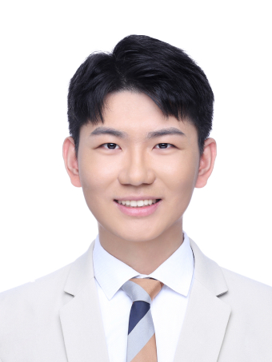
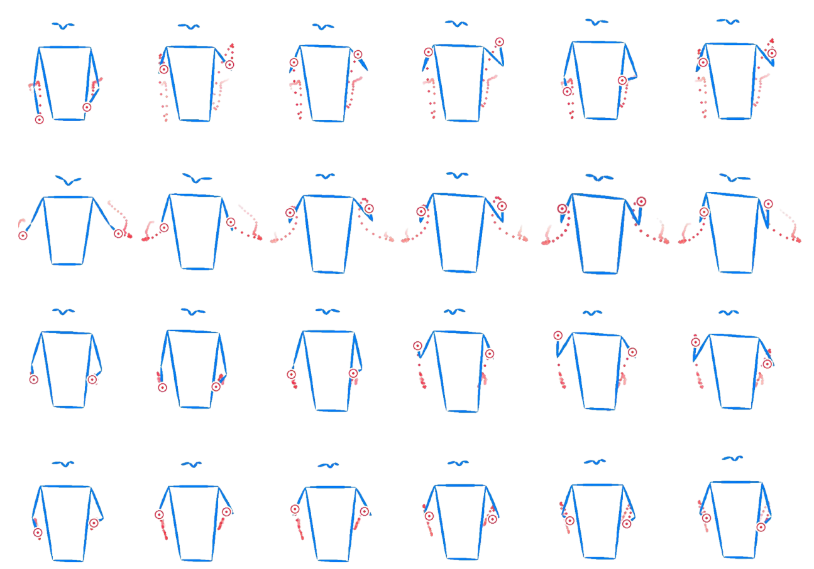
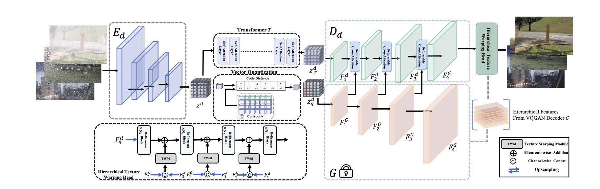

Jinbin Bai
Hi, I am Jinbin Bai (バイ・ジンビン), co-founder of MeissonFlow Research, and also a graduate student in Department of Computer Science at National Univeristy of Singapore (NUS), supervised by Prof. Hanwang Zhang and Prof. Shuicheng Yan. Before that, I work closely with Dr. Zhen Dong from UC Berkeley.
I am working on controllable conditional image synthesis and multi-modal foundation model. More
generally, I am interested in interactive content creation, multimedia
processing technologies for computational art and design. My goal is to design
algorithms and build tools to make it easier for artists and designers to create
cool things.
We are looking for motivated collaborators and support from industry partners. The best way to reach me is via email at jinbin5bai at gmail dot com. Regardless feel free to reach out if you have extra H100süòÅ (or to collab!)
Email /
Google
Scholar /
Github /
Hugging Face /
Twitter
|

|
What I'm Up To
News
- 2024-04 One paper accepted by IJCAI 2024.
- 2023-08 One paper accepted by BMVC 2023.
- 2023-07 Two papers accepted by ACM MM 2023.
- 2023-07 Two papers accepted by ICCV 2023.
- 2023-06 Taming Diffusion Models for Music-driven Conducting Motion
Generation accepted by AAAI 2023 Summer Symposium, with Best Paper
Award.
- 2023-05 One paper accepted by ICIP 2023.
- 2023-02 Translating natural language to planning goals with
large-language models now on arxiv.
- 2022-11 One paper accepted by ACCV 2022.
- 2022-06 LaT: Latent Translation with Cycle-Consistency for Video-Text
Retrieval now on arxiv.
- 2021-03 Awarded as Outstanding Graduate by Nanjing
University.
- 2019-03 Awarded as Outstanding Student by Nanjing
University.
Professional Services
- Reviewer: ECCV 2022, ACCV 2022, CVPR 2023, ICCV
2023, ACM MM 2023, EMNLP 2023, ICASSP 2024, CVPR
2024, ICPR 2024, Artificial Intelligence Review, ECCV 2024, ACM MM 2024, COLM 2024, NeurIPS 2024, ICASSP 2025, ICLR 2025, AISTATS 2025
- Program Committee Member: AAAI 2023, AAAI 2024, AAAI 2025
Selected Publications
|
|
|
MagicTailor: Component-Controllable Personalization in Text-to-Image Diffusion Models
Donghao Zhou*, Jiancheng Huang*, Jinbin Bai, Jiaze Wang, Hao Chen,
Guangyong Chen, Xiaowei Hu, Pheng-Ann Heng
Technical Report, 2024
[Paper]
[Code]
[Page]
We present MagicTailor to enable component-controllable personalization, a newly formulated task aiming to reconfigure specific components of concepts during personalization.
|
|
|
|
|
|
üî•Meissonic: Revitalizing Masked Generative Transformers for Efficient High-Resolution Text-to-Image Synthesis
Jinbin Bai*, Tian Ye*, Wei Chow, Enxin Song, Qing-Guo Chen, Xiangtai Li, Zhen Dong, Lei Zhu, Shuicheng Yan
Technical Report, 2024
[Paper]
[Model]
[Code]
[Demo]
[Toturial_EN]
[Toturial_JA]
Meissonic is a non-autoregressive mask image modeling text-to-image synthesis model that can generate high-resolution images. It is designed to run on consumer graphics cards. The left figure is generated by Meissonic.
|
|
|

|
|
ViewControl: Intergrating View Conditions for Image
Synthesis
Jinbin Bai, Zhen Dong, Aosong Feng, Xiao Zhang, Tian Ye, Kaicheng Zhou
IJCAI 2024 (Oral)
[Paper]
[Code]
This paper presents a novel framework that enhances existing
models with awareness of viewpoint information, thereby
enabling improved control over text-to-image diffusion
models.
|
|
|
|

|
|
Taming diffusion models for music-driven conducting motion generation
Zhuoran Zhao*, Jinbin Bai*, Delong Chen, Debang Wang, Yubo Pan
AAAI 2023 Summer Symposium, Best Paper Award
[Paper]
[Code]
|
|
|
|

|
|
Adverse Weather Removal with Codebook Priors
Tian Ye*, Sixiang Chen*, Jinbin Bai*, Jun Shi, Chenghao Xue, Jingxia Jiang, Junjie Yin, Erkang Chen, Yun Liu
ICCV 2023
[Paper]
|
|
|
|
|
|
LaT: Latent Translation with Cycle-Consistency for
Video-Text Retrieval
Jinbin Bai, Chunhui Liu, Feiyue Ni, Haofan Wang,
Mengying Hu, Xiaofeng Guo, Lele Cheng
Technical Report, 2022
[Paper]
A novel latent translation framework for solving the
modality gap problem. With this framework, we can align two
modalities with only a translation network, without
fine-tuning the encoder.
|
|
|

|
|
Semantic-aware Cartoon Style Transfer
Jinbin Bai
Technical Report, 2021
[Paper]
A new semantic-aware framework by matching the same semantic
regions for cartoon style transfer.
|
|
|
Miscellaneous
- Many deep learning researchers choose research over classes prematurely. In my view,
attending classes is akin to cultivating inner strength and broadening one's breadth of
knowledge, while research merely pertains to external skills. You may be interested in courses I've taken.
- I am a huge fan of Cities: Skylines and I love designing and simulating cities. I can't
wait for the release of Cities: Skylines II on Oct 24th, 2023! And, I've attended World Cities Summit (WCS) 2024 Conference!
- My favorite movies in recent years is Free Guy, and I dream of designing a game like
this.
- In my leisure moments, I delight in playing the piano surrounded by abundant greenery, finding peace and emotional comfort in the solitude.
|